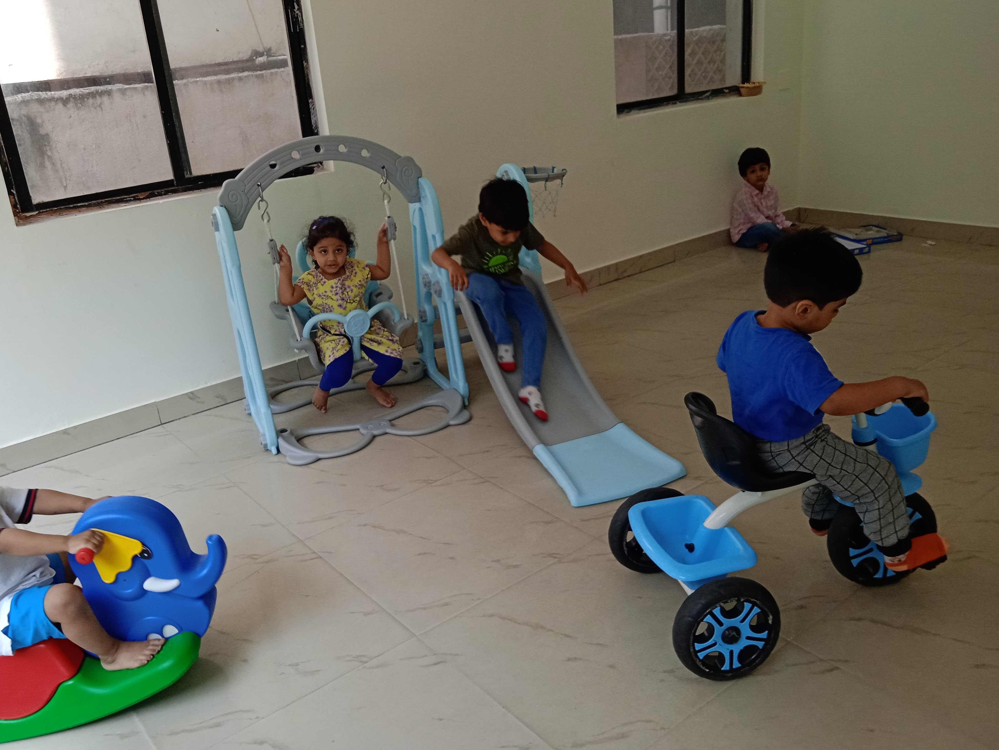

Our Toddler classroom is a nurturing environment where younger
children have the freedom to safely explore and learn through
discovery.
The space is organized, clean, and uncluttered with child-sized
furniture.
The atmosphere is positive, supportive, and non-competitive, which
gives them an obvious joy in 'work' which builds self-confidence,
concentration, and critical thinking skills.
The environment is language-rich, with adults using proper
nomenclature rather than baby talk so that the children are exposed
to and develop a broad vocabulary.
Based on daily observations, teachers introduce new materials and
activities that develop curiosity and stimulate learning.
These Learning activities include:
Self-care activities: Such as dressing up, using
the toilet, washing one's hands, and making snacks all according
to the child's personal capacity.
Large motor skills: Like walking, balancing,
running, climbing steps, and jumping.
Fine motor skills: Like grasping, reaching, using
utensils, doing artwork, picking up objects, transferring objects,
and more.
Caring for the environment: Food preparation,
cleaning up after work, taking care of plants and animals.
Social skills: Interacting with peers, developing
social behavior and language with other children, adults and
teachers throughout the day.
Language skills: Such as naming objects,
discussing pictures, having conversations, singing, and more.
"Education must begin at birth."
~ Maria Montessori
Primary Environment
The Montessori primary program offers a unique, mixed-age classroom
environment, for children approximately 3 to 6 years old.
Our environment is a carefully prepared, purposeful, and aesthetic
learning space for self-directed activities, allowing for an inner
desire to learn. A child, three years of age, seeks to become
independent. Often one hears the young child say, “Let me do it
myself!” Children also want to imitate adults around them. They need
to practice self-help skills that are necessary to develop into
independent individuals.
Teachers guide children by offering new challenges within work from
time to time, ensuring the child's interest to learn is kept alive.
Each area of the Montessori classroom has specific goals in
supporting the child to become an integrated individual.
Practical Life activities fall into four main
categories: care of self, care of the environment, control of
movement, and grace and courtesy.
These include activities such as sweeping, pouring, washing
dishes, setting the table, and sewing builds self-confidence in
the child's work and develop their concentration, order,
coordination, and independence. These are activities that the
child usually sees happening around him in his day to day life.
Grace and courtesy lessons are designed to help the children
feel comfortable with others and refine their social graces.
The Sensorial area is unique to the Montessori
environment. Each child learns from its sensory abilities through
touch, smell, taste, texture, and sound. Sensorial materials have
what is called "control of error", meaning that the child not only
works with the material but has a way to check their work rather
than relying on the teacher to do it for him. This is done to help
promote confidence, independence, accountability and
problem-solving on the part of the child.
The Language area supports learning the shapes
and sounds of letters, matching words and pictures, and composing
words with the Moveable alphabet. They explore phonetic reading,
phonograms, grammar material, and word study. Children have access
to books at all times in the environment. They also have a space
called the reading corner, to sit by themselves or with others and
read. Children also work at refining their pencil control to make
writing effortless and joyful. This is aided by the metal insets.
In the Math area , children are formally
introduced to mathematical concepts in order of concrete to
abstract; starting with tactile impressions of quantities and
progressing to memorization. The child develops concepts, such as
place value, numeration, fractions, and simple operations of
addition, multiplication, subtraction, and division.
The Culture area is offered in ways that the
child truly experiences it. He is acquainted with various groups,
such as botany, zoology, geography, history, music, art, and
general science. In geography, children are exposed to maps,
flags, landforms, animals, language, etc. from all 7 continents
which supports their understanding of the world around them.
In Science area, children learn about botany like
plants, trees, leaves, flowers, etc, and different classifications
of animals like mammals, amphibians, reptiles, birds, insects,
dinosaurs, etc. Children have interactive experiences as they
perform hands-on science experiments.
Art exposes children to learning skills such as
pasting, drawing, cutting, painting, and collage making. Every
month we highlight a different artist and talk about their art in
terms of their colour choices, the subjects they chose. This is
offered to the child in the form of stories and life experiences
so he can live it to understand it.
Day-care
Managing your home and work is a daunting task. Daycare can give you
that peace of mind you have been longing for. We help parents focus
on their daily routine worry-free, as they can rest assured that
their children are in safe hands by providing a safe, hygienic, and
enriching environment for children ages 1.5 to 8 years old. We offer
an extensive program after school and planned activities to keep
them busy with age- appropriate grouping.
Timings: 9:00 am to 3:30 pm.
Summer camp

Summer learning need not be boring!!! As we provide fun and engaging
activities for your child. While they are having fun and exploring
their own interests, they are also increasing their own capacities
for learning, teamwork, problem-solving, knowledge, and
self-awareness. Our Summer camp lasts for four weeks and is eligible
for 3 years to 12 years old.